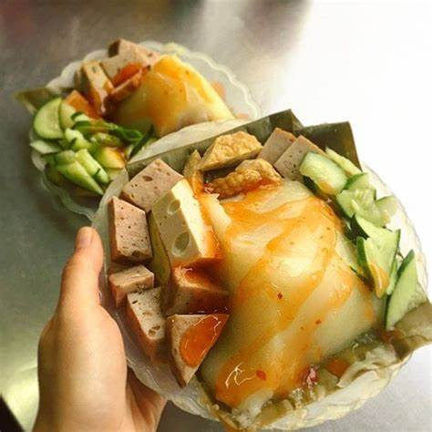
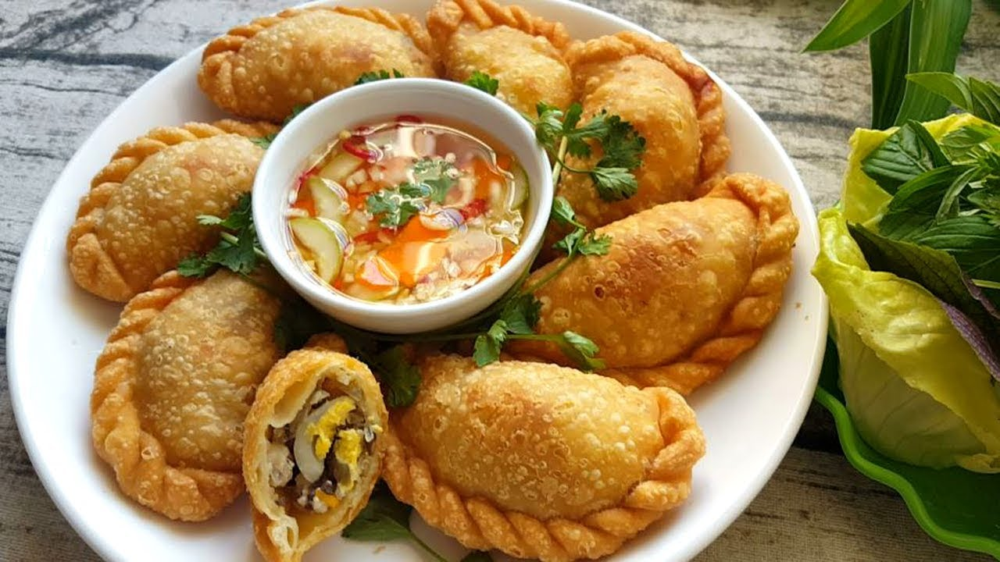
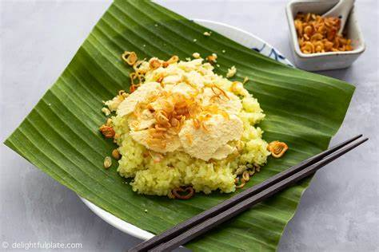
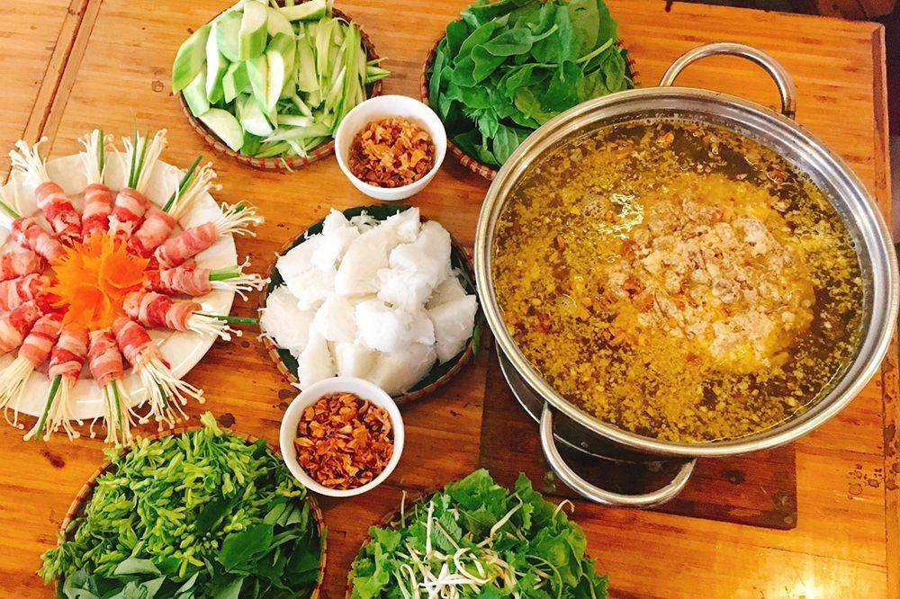

Ẩm thực Hà Nội

Du lịch Hà Nội
Bánh giò Hà Nội Món ăn dân dã, phổ biến của người dân Hà thành
Bánh giò Hà Nội là món ăn giản dị đã len lỏi sâu vào trong cuộc sống thường nhật của người dân Thủ đô, vừa là bữa ăn sáng vừa …

Du lịch Hà Nội
Bánh gối Hà Nội – Món ăn dân giã được ưa thích của người Thủ đô
Bánh Gối Hà Nội món ăn giản dị từ cách chế biến cho tới thưởng thức này lại được người Hà Thành ưa thích. Nhất là mỗi độ mùa đông …

Du lịch Hà Nội
Xôi xéo Hà Nội – Có gì “hấp dẫn” trong món ăn sáng quen thuộc?
Xôi xéo Hà Nội là sự kết hợp hoàn hảo giữa gạo nếp, đỗ xanh, hành phi và mỡ tạo thành một trong những món ăn đặc trưng của thủ …

Du lịch Hà Nội
Lẩu riêu cua bắp bò Hà Nội – Món ngon nổi tiếng của đất Hà thành
Lẩu riêu cua bắp bò Hà Nội là một món ăn đặc sắc với hương vị đậm đà mà thực khách không nên bỏ lỡ mỗi khi tới khám phá …